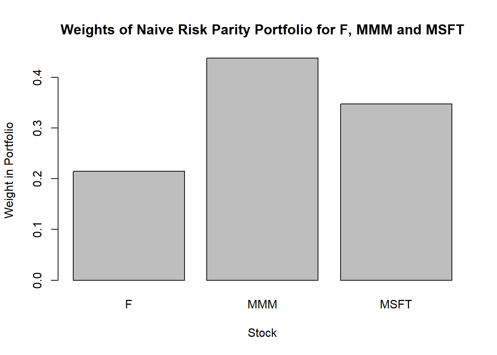
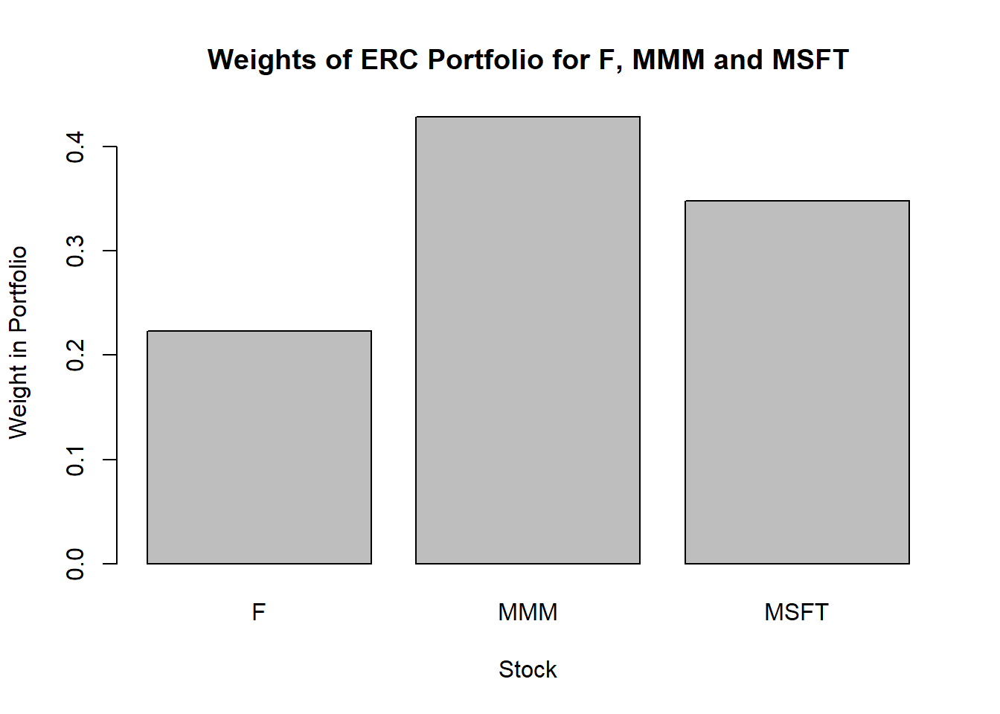
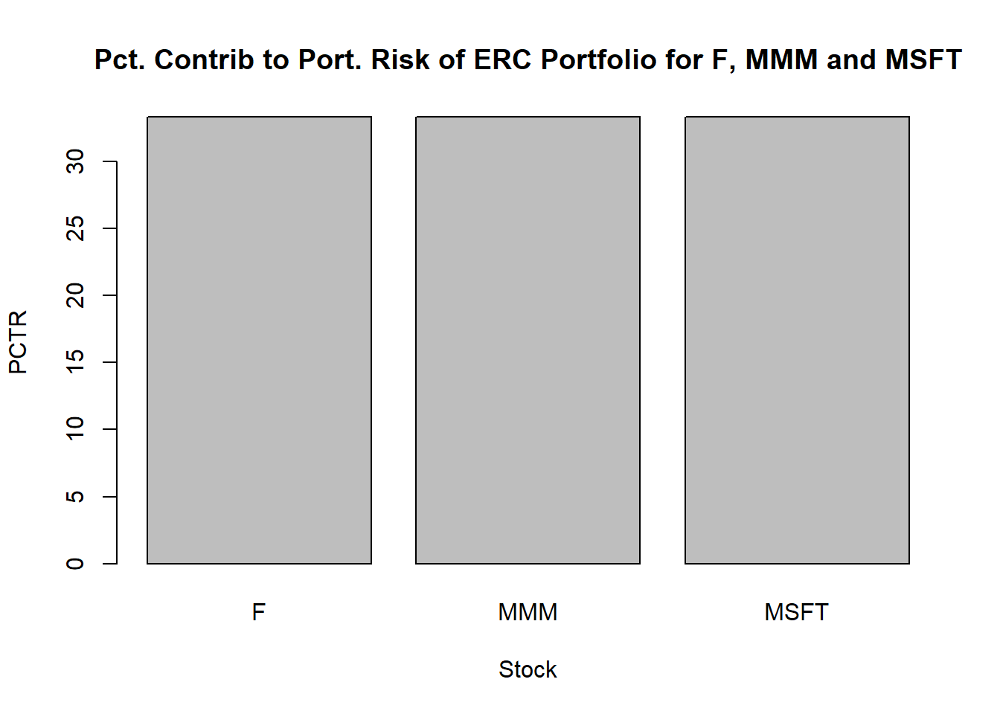
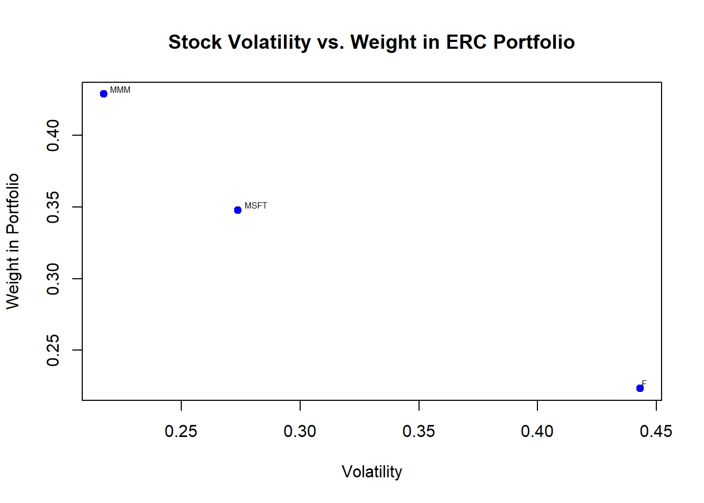
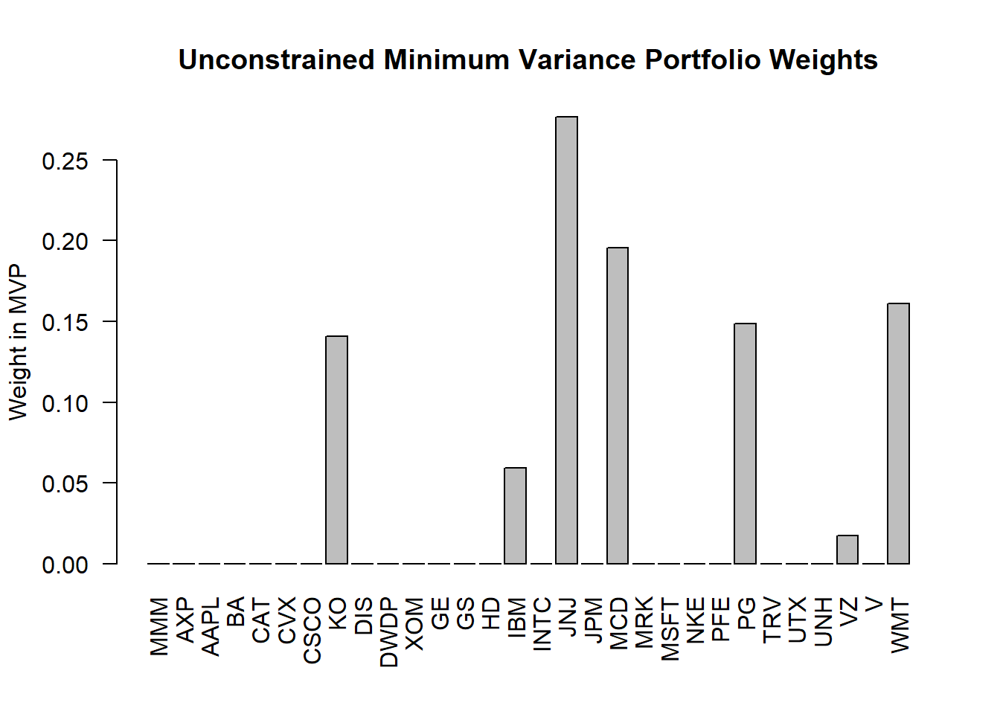
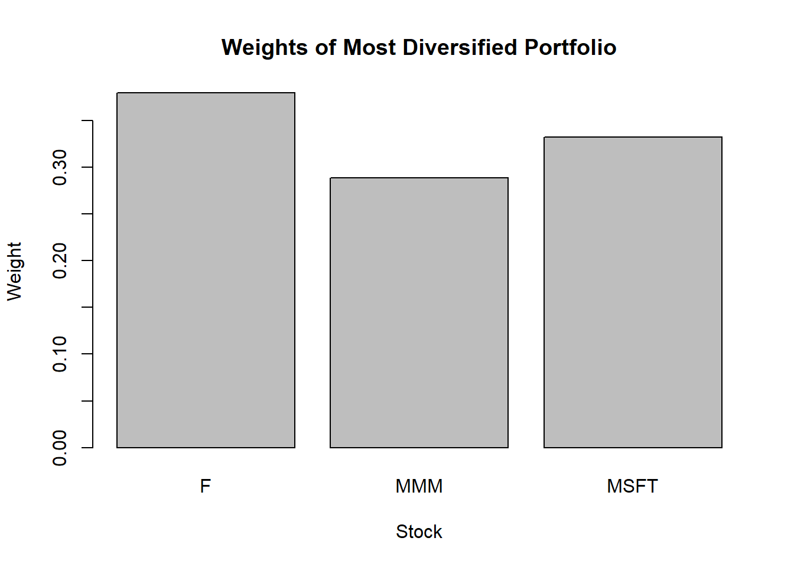
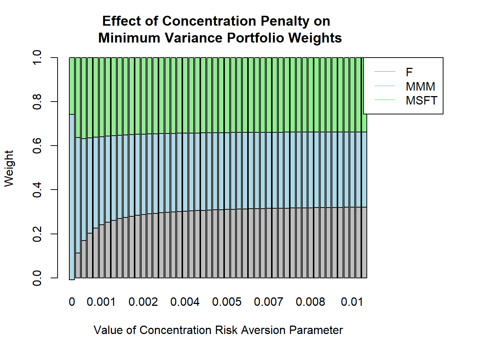

Chapter 8 Post-Modern Portfolio Theory
The original Markowitz spproach to portfolio construction, which we implemented via the Quadratic Utility approach of:
\[ max_\omega \quad \omega' \mu - 2^{-1}\lambda^{-1} \omega' \Sigma \omega \quad \text{s.t.} \ \omega' \mathbf{1} = 1 \]
is typically referred to as Modern Portfolio Theory (“MPT”). MPT requires the estimation of asset means and co-variances, and trades off return vs. risk in an optimization framework. While the approach is intuitive in its approach, practitioners have found numerous challenges in the implementation of the MPT framework, including:
- unintuitive holdings,
- highly concentrated portfolios, and
- excess turnover.
Each of these issues leads to a common phenomenon of MTP optimal portfolios producing inferior results out of sample relative to more naive approaches. A significant contributor to the challenge of implementing MPT approaches is the combination of the extreme sensitivity of the MPT approach to errors in the mean vector, combined with the real-world challenge of estimating such a noisy parameter. This extreme sensitivity arises as a result of the full investment constraint in the optimization process. These challenges have resulted in numerous adaptations of the MPT approach in practice, including:
- Risk Parity Investing,
- Diversification/Concentration Management, and
- Alternative Risk Definitions (e.g. Mean-CVaR) that focus on downside risk as opposed to the symmatric nature of variance/volatility.
Collectively, these and other more recent approaches to portfolio construction can be referred to as Post-Modern Portfolio Theory (“PMPT”).
8.1 Risk Parity
Risk parity terminology and meaning often depends on the user, but for the purposes of this book, we define two classes of risk parity approaches to investing - inverse volatility (“IV”), which is sometimes also referred to as naive risk parity, and equal risk contribution (“ERC”). IV as a weighting scheme that weights securities or asset classes proportional to the inverse of their volatility, whereas ERC is a more complicated approach to portfolio construction that results each security’s contribution to total portfolio risk being equal. IV strategies therefore consider only the volatilities of the assets in the universe, while ERC strategies consider also the covariance structure between all the assets in the portfolio.
As a visualization, consider a standard 60-40 portfolio of stocks and bonds. Using recent data, the volatility of the equity portion was about 10%, while the volatility of the bond portfolio was closer to 3.5% - the portfolio itself had to total combined volatility of about 6% (the correlation between bonds and stocks during this period was 0). How much of the portfolio total volatility could be attributed to the two components?
| Asset Class | Weight (%) | Volatility (%) | % Contrib. to Port Risk |
|---|---|---|---|
| Equities | 60% | 10.2% | 99.4% |
| Bonds | 40% | 3.5% | 0.6% |
| Total Portfolio | 100% | 6.3% | 100% |
Consider instead if we had used a portfolio approach that sought to equalize the % Contrib. to Port Risk at 50% for each asset class:
| Asset Class | Weight (%) | Volatility (%) | % Contrib. to Port Risk |
|---|---|---|---|
| Equities | 25.5% | 10.2% | 50% |
| Bonds | 74.5% | 3.5% | 50% |
| Total Portfolio | 100% | 3.7% | 100% |
The Equal Risk Contribution portfolio has just 25% of its assets in the higher risk equity portfolio and 75% of its assets in the relatively lower volatility bond portfolio. The portfolio, with a total risk of 3.7%, derives 50% of its volatility from bonds and 50% from equities.
There are two main quantitative approaches to risk parity - naive risk parity that ignores correlations and weights stocks proportionally to the inverse of their volatility forecasts and equal risk contribution portfolios that take into account the full covariance structure of the market in setting the % Contrib. to Port Risk to be equal for all assets.
8.1.1 Inverse Volatility Weighting (Naive Risk Parity)
For IV, we first estimate the volatility of the assets in the universe and then assign weights to each asset in the resulting portfolio such that:
\[ \omega_i = \frac{\sigma^{-1}_i}{\sum_{i=1}^k \sigma^{-1}_i} \]
In the IV portfolio construction process, assets with lower volatilities are assigned higher weights, and assets with higher volatilities are assigned lower weights.
library(quantmod)
tickers <- c("F","MMM","MSFT")
getSymbols(tickers)## [1] "F" "MMM" "MSFT"dat <- merge.xts(F$F.Adjusted, MMM$MMM.Adjusted, MSFT$MSFT.Adjusted)
ret <- (exp(diff(log(dat)))-1)[-1,]
vols <- apply(ret,2,sd)
wgts_rp <- (1/vols)/sum(1/vols)
names(wgts_rp) <- tickers
barplot(wgts_rp,
main="Weights of Naive Risk Parity Portfolio for F, MMM and MSFT",
xlab="Stock",
ylab="Weight in Portfolio")
8.1.2 Equal Risk Contributions
A more complicated approach to risk parity is the one that chooses asset weights such that the contribution of each asset to the total portfolio’s risk is equal. Like IV approaches, ERC applies relatively higher weights to lower risk assets and vice versa, but unlike IV approaches, the ERC methodology considers the full covariance structure of the market, not just the asset variances.
The ERC approac of (Maillard, Roncalli, and Teiletche 2010) requires a solution to the following:
\[ TRC_i = TRC_j \quad \forall_{i,j} \]
Where
\[ TRC_i = \omega_i \frac{\partial \sigma_p}{\partial \omega_i} \]
This ERC problem can be solved via a newton approach (Algorithm 1 in (Chaves et al. 2012)). The R function SolveRiskParity() computes ERC portfolio weights for a given covariance matrix (function code not shown).
library(tseries)
library(quantmod)
tickers <- c("F","MMM","MSFT")
getSymbols(tickers)## [1] "F" "MMM" "MSFT"dat <- merge.xts(F$F.Adjusted, MMM$MMM.Adjusted, MSFT$MSFT.Adjusted)
ret <- (exp(diff(log(dat)))-1)[-1,]
sigma <- cov(ret)
erc_soln <- SolveRiskParity(sigma)
wgts <- erc_soln$port_wgt[,1]
names(wgts) <- tickers
barplot(wgts,
main="Weights of ERC Portfolio for F, MMM and MSFT",
xlab="Stock",
ylab="Weight in Portfolio")
We can confirm that the risk contribution is equal for each asset by verifying that \(\omega_i \times \frac{\partial \sigma_p}{\partial \omega_i} = \omega_j \times \frac{\partial \sigma_p}{\partial \omega_j} \quad \forall \ i, j\):
contribs <- erc_soln$pctr[,1]
names(contribs) <- tickers
barplot(contribs,
main="Pct. Contrib to Port. Risk of ERC Portfolio for F, MMM and MSFT",
xlab="Stock",
ylab="PCTR")
In general, ERC portfolios have reduced risk relative to a market capitalization weighted or equally weighted benchmark due to the relative overweighting of assets with lower volatility and relative underweighting of assets with relatively higher volatility - there is on average a negative relationship between an asset’s volatility and its weight in the ERC portfolio:
library(calibrate)
vols <- apply(ret,2,sd)*sqrt(252)
plot(vols,wgts,
main="Stock Volatility vs. Weight in ERC Portfolio",
xlab="Volatility",
ylab="Weight in Portfolio",
pch=19,
col="blue"
)
textxy(vols,wgts, labs=tickers, cx = 1, dcol = "black", m = c(-1, -1))
8.2 Concentration/Diversification
Mean-Variance optimal portfolios are often highly concentrated, with potentially very large positions in the most attractive assets:
library(quantmod)
library(quadprog)
tickers <- c("MMM","AXP","AAPL","BA","CAT","CVX","CSCO",
"KO","DIS","DWDP","XOM","GE","GS","HD","IBM",
"INTC","JNJ","JPM","MCD","MRK","MSFT","NKE",
"PFE","PG","TRV","UTX","UNH","VZ","V","WMT")
getSymbols(tickers)## [1] "MMM" "AXP" "AAPL" "BA" "CAT" "CVX" "CSCO" "KO" "DIS" "DWDP"
## [11] "XOM" "GE" "GS" "HD" "IBM" "INTC" "JNJ" "JPM" "MCD" "MRK"
## [21] "MSFT" "NKE" "PFE" "PG" "TRV" "UTX" "UNH" "VZ" "V" "WMT"dat <- MMM$MMM.Adjusted
for (i in 2:length(tickers)) {
obj <- paste(tickers[i],"$",tickers[i],".Adjusted",sep="")
dat <- merge(dat,eval(parse(text=obj)))
}
colnames(dat) <- tickers
dat <- dat['2008-03-19/']
ret <- (exp(diff(log(dat)))-1)[-1,]
sigma <- cov(ret)
exp_ret <- array(0,dim=c(30,1))
const <- array(1,dim=c(30,1))
Amat <- cbind(const, diag(nrow(sigma)))
bvec <- c(1, rep(0, nrow(sigma)))
port_wgts <- solve.QP(sigma,exp_ret,Amat,bvec=bvec,meq=1)$solution
names(port_wgts) <- tickers
barplot(port_wgts,
main="Unconstrained Minimum Variance Portfolio Weights",
ylab="Weight in MVP",
las=2)
Using a representative sample of 30 large cap U.S. stocks, an unconstrained MVP results in the portfolio holding as much as 20-30% in certain stocks.
Two methods to prioritize diversification/deconcentration in the optimization process include the Most Diversified Portfolio (“MDP”) approach of (Choueifaty and Coignard 2008) as well as the direct modification of the objective function using the Herfindahl-Hirschman Index (“HHI”).
8.2.1 Most Diversified Portfolio
The MDP is the portfolio that maximizes the diversification ratio of the portfolio, defined as the ratio of the weighted average volatility of the portfolio constituents to the volatility of the portfolio:
\[ DR = \frac{\omega' v}{\sqrt{\omega' \Sigma \omega}} \]
Where \(v\) is a vector of individual asset volatilities. Maximization of the diversification ratio is equivalent to the following optimization objective function:
\[ min_\omega \quad \omega' C \omega \quad \text{s.t.} \ \omega' \mathbf{1} = 1 \]
with \(C\) the correlation matrix of assets in the investment universe.
library(quantmod)
tickers <- c("F","MMM","MSFT")
getSymbols(tickers)## [1] "F" "MMM" "MSFT"dat <- merge.xts(F$F.Adjusted, MMM$MMM.Adjusted, MSFT$MSFT.Adjusted)
ret <- (exp(diff(log(dat)))-1)[-1,]
C <- cor(ret)
mdp <- as.numeric((solve(C)%*%rep(1,3))/as.numeric(rep(1,3)%*%solve(C)%*%rep(1,3)))
names(mdp) <- tickers
barplot(mdp,
main="Weights of Most Diversified Portfolio",
xlab="Stock",
ylab="Weight")
8.2.2 HHI Based Deconcentration
The Herfindahl-Hirschman Index (defined as \(HHI(\omega) = \sum_{i=1}^N \omega_i^2\)) is a measure of market concentration and was applied in a portfolio optimization context in (King 2007).The approach generalizes to that of the use of a modified covariance matrix in the optimization objective function. For a minimum variance portfolio with a concentration penalty:
\[ \min_\omega \quad \omega' (\Sigma + \lambda_{c} \mathbf{I}) \omega \quad \text{s.t.} \ \omega' \mathbf{1} = 1 \]
Where:
- \(\mathbf{I}\) is an identity matrix
- \(\lambda_c\) is a concentration risk aversion parameter
Larger values of \(\lambda_c\) produce portfolios that are less concentrated in nature, while a value of \(\lambda_c = 0\) results in the unconstrained minimum variance formulation (no weight given to avoidance of concentration risk).
Using a minimum variance portfolio as an example, we can observe the impact of a concentration penalty on the resulting weight of a 3 asset portfolio:
library(tseries)
library(quantmod)
tickers <- c("F","MMM","MSFT")
getSymbols(tickers)## [1] "F" "MMM" "MSFT"dat <- merge.xts(F$F.Adjusted, MMM$MMM.Adjusted, MSFT$MSFT.Adjusted)
ret <- (exp(diff(log(dat)))-1)[-1,]
sigma <- cov(ret)
lambda_c <- seq(0,0.01,length.out=50)
port_wgts <- array(0,dim=c(3,50))
for (i in 1:dim(port_wgts)[2]) {
sigma_adj <- sigma + lambda_c[i]*diag(3)
port_wgts[,i] <- {(solve(sigma_adj)%*%rep(1,3))/
as.numeric(rep(1,3)%*%solve(sigma_adj)%*%rep(1,3))}
}
colnames(port_wgts) <- as.character(round(lambda_c,digits=3))
par(mar=c(5.1, 4.1, 4.1, 8.1), xpd=TRUE)
barplot(port_wgts,
main="Effect of Concentration Penalty on \n Minimum Variance Portfolio Weights",
xlab="Value of Concentration Risk Aversion Parameter",
ylab="Weight",
col=c("grey","lightblue","lightgreen")
)
legend("topright", inset=c(-0.2,0), legend=tickers,col=c("grey","lightblue","lightgreen"),lty=1)
8.3 Mean-CVaR
While the standard MPT optimization approach uses variance as the measure of risk in the objective function:
\[ \max_\omega \quad \omega' \mu - \frac{1}{2} \lambda \omega' \Sigma \omega \]
(Rockafellar and Uryasev 2000) replaced variance with the downside risk measure Conditional Value-at-Risk (“CVaR”) - sometimes referred to as Expected Tail Loss (“ETL”):
\[ CVaR_\alpha = - \mathbb{E} (r|r \leq q^r(\alpha)) \]
Aplying this in a quadratic utility framework results in the objective function
\[ \max_\omega \quad \omega' \mu - \lambda \cdot \text{CVaR}_\alpha (\omega) \quad \text{s.t.} \ \omega' \mathbf{1} = 1 \]
(TODO): Finish CVaR Section with example
8.4 Synthesis of PMPT Approaches
(TODO): Results from paper showing optimality, etc., reasons why for each approach.
References
Maillard, S., T. Roncalli, and J. Teiletche. 2010. “The Properties of Equally Weighted Risk Contribution Portfolios.” The Journal of Portfolio Management 36 (4): 60–70. doi:https://doi.org/10.3905/jpm.2010.36.4.060.
Chaves, D., J. Hsu, F. Li, and O. Shakernia. 2012. “Efficient Algorithms for Computing Risk Parity Portfolio Weights.” Journal of Investing 21 (3): 150–63. doi:https://doi.org/10.3905/joi.2012.21.3.150.
Choueifaty, Y., and Y. Coignard. 2008. “Toward Maximum Diversification.” The Journal of Portfolio Management 35 (1): 40–51. doi:https://doi.org/10.3905/JPM.2008.35.1.40.
King, David. 2007. “Portfolio Optimization and Diversification.” The Journal of Asset Management 8 (5): 296–307. doi:https://doi.org/10.1057/palgrave.jam.2250082.
Rockafellar, R. T., and S. Uryasev. 2000. “Optimization of Conditional Value-at-Risk.” Journal of Risk 2 (3): 21–41. doi:https://doi.org/10.21314/JOR.2000.038.